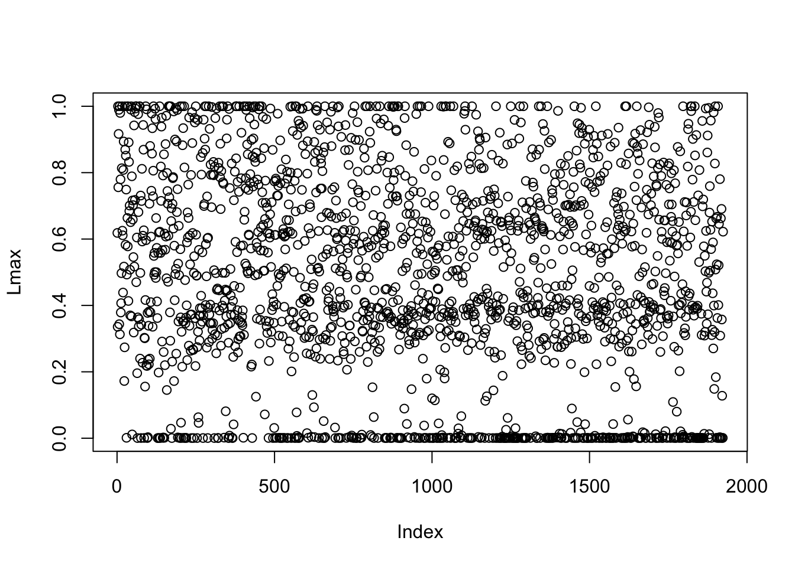
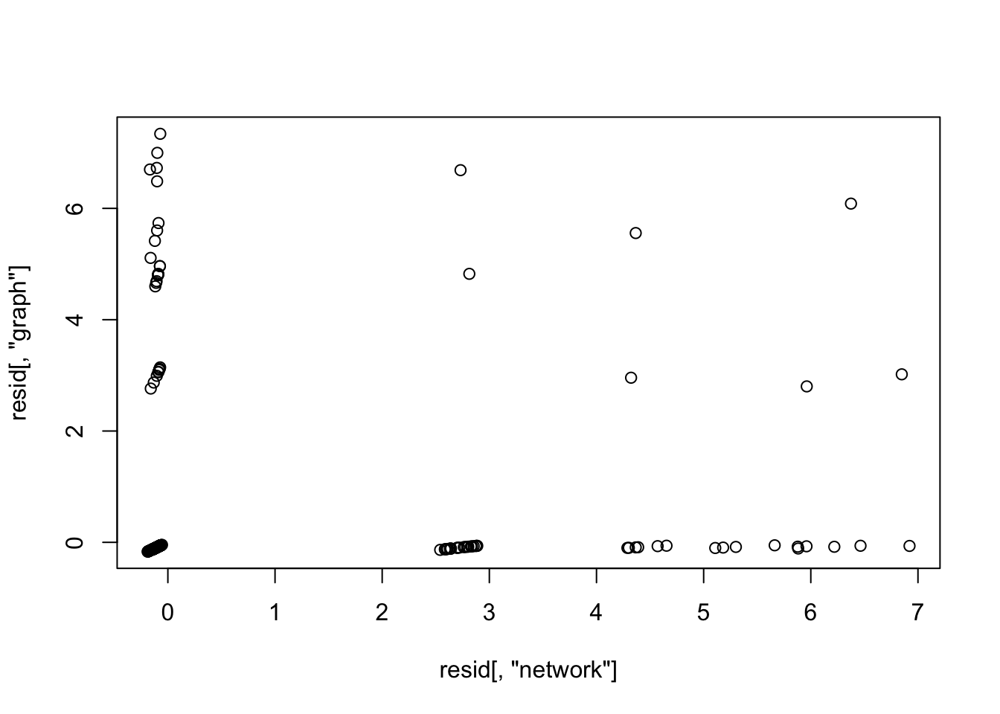
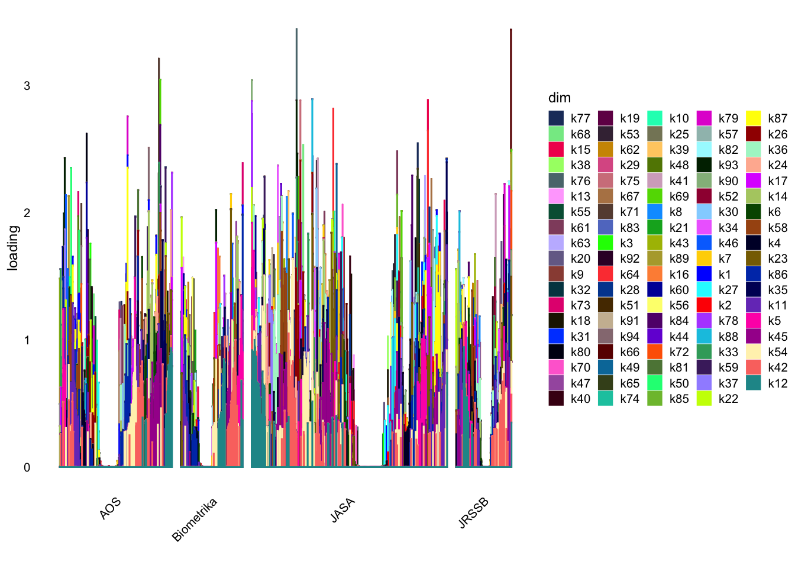

Last updated: 2023-09-21
Checks: 7 0
Knit directory: gsmash/
This reproducible R Markdown analysis was created with workflowr (version 1.7.0). The Checks tab describes the reproducibility checks that were applied when the results were created. The Past versions tab lists the development history.
Great! Since the R Markdown file has been committed to the Git repository, you know the exact version of the code that produced these results.
Great job! The global environment was empty. Objects defined in the global environment can affect the analysis in your R Markdown file in unknown ways. For reproduciblity it’s best to always run the code in an empty environment.
The command set.seed(20220606) was run prior to running
the code in the R Markdown file. Setting a seed ensures that any results
that rely on randomness, e.g. subsampling or permutations, are
reproducible.
Great job! Recording the operating system, R version, and package versions is critical for reproducibility.
Nice! There were no cached chunks for this analysis, so you can be confident that you successfully produced the results during this run.
Great job! Using relative paths to the files within your workflowr project makes it easier to run your code on other machines.
Great! You are using Git for version control. Tracking code development and connecting the code version to the results is critical for reproducibility.
The results in this page were generated with repository version ff7cf2a. See the Past versions tab to see a history of the changes made to the R Markdown and HTML files.
Note that you need to be careful to ensure that all relevant files for
the analysis have been committed to Git prior to generating the results
(you can use wflow_publish or
wflow_git_commit). workflowr only checks the R Markdown
file, but you know if there are other scripts or data files that it
depends on. Below is the status of the Git repository when the results
were generated:
Ignored files:
Ignored: .Rhistory
Ignored: .Rproj.user/
Untracked files:
Untracked: analysis/sla_exploration_MS.Rmd
Untracked: data/SLA/
Untracked: data/sla_2000.rds
Untracked: data/sla_full.rds
Untracked: output/fit_ebpmf_K1.rds
Untracked: output/fit_ebpmf_K20.rds
Untracked: output/fit_tm_k20.rds
Untracked: output/sla_full_tm_fit_w5.rds
Untracked: output/sla_full_tm_fit_w5_k20.rds
Untracked: output/slafull_ebnmf_fit_w5_K20.rds
Untracked: output/slafull_ebnmf_fit_w5_init1.rds
Untracked: output/slafull_ebnmf_fit_w5_largeK.rds
Unstaged changes:
Modified: analysis/fit_ebpmf_sla_full_nonneg.Rmd
Note that any generated files, e.g. HTML, png, CSS, etc., are not included in this status report because it is ok for generated content to have uncommitted changes.
These are the previous versions of the repository in which changes were
made to the R Markdown (analysis/01MS_ebpmf_residuals.Rmd)
and HTML (docs/01MS_ebpmf_residuals.html) files. If you’ve
configured a remote Git repository (see ?wflow_git_remote),
click on the hyperlinks in the table below to view the files as they
were in that past version.
| File | Version | Author | Date | Message |
|---|---|---|---|---|
| Rmd | ff7cf2a | Matthew Stephens | 2023-09-21 | workflowr::wflow_publish("analysis/01MS_ebpmf_residuals.Rmd") |
library(flashier)Loading required package: ebnmLoading required package: magrittrLoading required package: ggplot2library(ggplot2)
library(Matrix)
library(readr)
library(tm)Loading required package: NLP
Attaching package: 'NLP'The following object is masked from 'package:ggplot2':
annotatelibrary(fastTopics)
library(ebpmf)I wanted to look at the residuals from a basic EBPMF fit that I generated here, and analyze them using flashier.
Read in the original data and the fit.
sla <- read_csv("data/SLA/SCC2016/Data/paperList.txt")Rows: 3248 Columns: 5
── Column specification ────────────────────────────────────────────────────────
Delimiter: ","
chr (3): DOI, title, abstract
dbl (2): year, citCounts
ℹ Use `spec()` to retrieve the full column specification for this data.
ℹ Specify the column types or set `show_col_types = FALSE` to quiet this message.sla <- sla[!is.na(sla$abstract),]
sla$docnum = 1:nrow(sla)
datax = readRDS('data/sla_full.rds')
dim(datax$data)[1] 3207 10104sum(datax$data==0)/prod(dim(datax$data))[1] 0.9948157datax$data = Matrix(datax$data,sparse = TRUE)
doc_to_use = order(rowSums(datax$data),decreasing = T)[1:round(nrow(datax$data)*0.6)]
mat = datax$data[doc_to_use,]
samples = datax$samples
samples = lapply(samples, function(z){z[doc_to_use]})
word_to_use = which(colSums(mat>0)>=5)
mat = mat[,word_to_use]
sla = sla[doc_to_use,]
fit_ebpmf_k1 = readRDS("output/fit_ebpmf_K1.rds")
resid = flashier:::residuals.flash(fit_ebpmf_k1$fit_flash)I’m interested in non-negative fits, so here I try that. One concern is that the residuals are often negative, so it’s a bit counter intuitive to fit a non-negative model to them. However the normal errors do mean that the observations can be negative even when L and F are both non-negative. Further, empirically the results seem to make sense (see below). It may be worth coming back to this…
Note that I am estimating the residual variance using flash, rather
than fixing it to the values obtained from the VGA.
I believe this is equivalent to using the results of the VGA to fix q_mu
to a point mass at the posterior mean, and then optimizing the ELBO over
q_L,q_F,sigma with q_mu fixed to that point mass. (A natural thing to do
would be then to iterate, and re-estimate q_mu, sigma as non-point mass
distributions; this could be useful to look at in future.)
It turns out that this fits a lot more factors than if we fix the residual variance to the values estimated from the VGA (commented out code). Fixing the residual variance estimated only 1 factor whereas estimating it adds all 100 that I allowed (removes 6 at the end).
set.seed(1)
fit.nn = flash(resid,ebnm_fn = ebnm_point_exponential,var_type=2,greedy_Kmax = 100)Adding factor 1 to flash object...
Adding factor 2 to flash object...
Adding factor 3 to flash object...
Adding factor 4 to flash object...
Adding factor 5 to flash object...
Adding factor 6 to flash object...
Adding factor 7 to flash object...
Adding factor 8 to flash object...
Adding factor 9 to flash object...
Adding factor 10 to flash object...
Adding factor 11 to flash object...
Adding factor 12 to flash object...
Adding factor 13 to flash object...
Adding factor 14 to flash object...
Adding factor 15 to flash object...
Adding factor 16 to flash object...
Adding factor 17 to flash object...
Adding factor 18 to flash object...
Adding factor 19 to flash object...
Adding factor 20 to flash object...
Adding factor 21 to flash object...
Adding factor 22 to flash object...
Adding factor 23 to flash object...
Adding factor 24 to flash object...
Adding factor 25 to flash object...
Adding factor 26 to flash object...
Adding factor 27 to flash object...
Adding factor 28 to flash object...
Adding factor 29 to flash object...
Adding factor 30 to flash object...
Adding factor 31 to flash object...
Adding factor 32 to flash object...
Adding factor 33 to flash object...
Adding factor 34 to flash object...
Adding factor 35 to flash object...
Adding factor 36 to flash object...
Adding factor 37 to flash object...
Adding factor 38 to flash object...
Adding factor 39 to flash object...
Adding factor 40 to flash object...
Adding factor 41 to flash object...
Adding factor 42 to flash object...
Adding factor 43 to flash object...
Adding factor 44 to flash object...
Adding factor 45 to flash object...
Adding factor 46 to flash object...
Adding factor 47 to flash object...
Adding factor 48 to flash object...
Adding factor 49 to flash object...
Adding factor 50 to flash object...
Adding factor 51 to flash object...
Adding factor 52 to flash object...
Adding factor 53 to flash object...
Adding factor 54 to flash object...
Adding factor 55 to flash object...
Adding factor 56 to flash object...
Adding factor 57 to flash object...
Adding factor 58 to flash object...
Adding factor 59 to flash object...
Adding factor 60 to flash object...
Adding factor 61 to flash object...
Adding factor 62 to flash object...
Adding factor 63 to flash object...
Adding factor 64 to flash object...
Adding factor 65 to flash object...
Adding factor 66 to flash object...
Adding factor 67 to flash object...
Adding factor 68 to flash object...
Adding factor 69 to flash object...
Adding factor 70 to flash object...
Adding factor 71 to flash object...
Adding factor 72 to flash object...
Adding factor 73 to flash object...
Adding factor 74 to flash object...
Adding factor 75 to flash object...
Adding factor 76 to flash object...
Adding factor 77 to flash object...
Adding factor 78 to flash object...
Adding factor 79 to flash object...
Adding factor 80 to flash object...
Adding factor 81 to flash object...
Adding factor 82 to flash object...
Adding factor 83 to flash object...
Adding factor 84 to flash object...
Adding factor 85 to flash object...
Adding factor 86 to flash object...
Adding factor 87 to flash object...
Adding factor 88 to flash object...
Adding factor 89 to flash object...
Adding factor 90 to flash object...
Adding factor 91 to flash object...
Adding factor 92 to flash object...
Adding factor 93 to flash object...
Adding factor 94 to flash object...
Adding factor 95 to flash object...
Adding factor 96 to flash object...
Adding factor 97 to flash object...
Adding factor 98 to flash object...
Adding factor 99 to flash object...
Adding factor 100 to flash object...
Wrapping up...
Done.
Nullchecking 100 factors...
Factor2set to zero, increasing objective by 2.728e+02.
Factor6set to zero, increasing objective by 3.403e+02.
Factor8set to zero, increasing objective by 6.954e+02.
Factor18set to zero, increasing objective by 4.404e+02.
Factor34set to zero, increasing objective by 4.127e+02.
Factor35set to zero, increasing objective by 7.171e+01.
Wrapping up...
Removed 6 factors.
Done.#fit.nn2 = flash(resid,S = sqrt(fit_ebpmf_k1$sigma2),ebnm_fn = ebnm_point_exponential,var_type=NULL)L= fit.nn$L_pm
F_pm = fit.nn$F_pm
rownames(L)<-1:nrow(L)
Lnorm = t(t(L)/apply(L,2,max))
Fnorm = t(t(F_pm)*apply(L,2,max))
khat = apply(Lnorm,1,which.max)
Lmax = apply(Lnorm,1,max)
plot(Lmax)
khat[Lmax<0.1] = 0
keyw.nn =list()
for(k in 1:ncol(Fnorm)){
key = Fnorm[,k]>log(2)
keyw.nn[[k]] = (colnames(mat)[key])[order(Fnorm[key,k],decreasing = T)]
}
print(keyw.nn)[[1]]
[1] "fals" "control" "reject" "discoveri" "fdr"
[6] "hypothes" "pvalu" "procedur" "test" "null"
[11] "kfwer" "stepdown" "rate" "fwer" "multipl"
[16] "alpha" "stepup" "fdp" "gamma" "hochberg"
[21] "power" "familywis" "number" "error" "hypothesi"
[26] "depend" "benjamini" "proport" "toler" "detect"
[31] "conserv" "individu" "abil" "singlestep" "sime"
[36] "total" "fix" "stat" "defin"
[[2]]
[1] "treatment" "trial" "patient" "assign" "causal"
[6] "placebo" "outcom" "random" "complianc" "adher"
[11] "depress" "dose" "clinic" "effect" "subject"
[16] "drug" "arm" "care" "intervent" "noncompli"
[21] "receiv" "assumpt" "control" "princip" "sever"
[26] "instrument" "latent" "health" "estimand" "children"
[31] "meet" "analys" "activ" "phase" "particip"
[36] "primari" "doserespons" "treat" "toxic" "encourag"
[41] "physician" "potenti" "prevent" "sensit" "adjust"
[46] "imperfect" "vaccin"
[[3]]
[1] "wishart" "graph" "famili" "cone" "conjug"
[6] "prior" "graphic" "shape" "matric" "invers"
[11] "gaussian" "homogen" "dimens" "paramet" "covari"
[16] "ann" "definit" "type" "sigma" "edg"
[21] "markov" "posit" "eigenvalu" "decompos" "space"
[26] "matrix" "accept" "equal" "fix" "zero"
[31] "concentr" "correspond"
[[4]]
[1] "markov" "chain" "carlo" "mont" "algorithm" "posterior"
[7] "mcmc" "bayesian" "prior" "jump" "sampler" "space"
[13] "mixtur"
[[5]]
[1] "cluster"
[[6]]
[1] "lasso" "select" "penalti" "spars"
[5] "penal" "oracl" "sparsiti" "matrix"
[9] "coeffici" "variabl" "nonzero" "regular"
[13] "highdimension" "vector" "norm" "adapt"
[17] "selector" "bound" "dantzig" "threshold"
[21] "nois" "regress" "shrinkag" "size"
[25] "squar" "element"
[[7]]
[1] "cancer" "diseas" "incid" "surviv" "breast"
[6] "cure" "report" "risk" "diagnosi" "prostat"
[11] "censor" "event" "program" "time" "surveil"
[16] "registri" "nation" "delay" "mortal" "death"
[21] "releas" "area" "year" "state" "trend"
[26] "hazard" "semiparametr" "tumor" "rate" "trial"
[31] "institut" "counti" "followup" "lung" "prevent"
[36] "unit" "screen" "data" "detect" "slope"
[41] "cohort" "geograph" "preval" "arm" "month"
[[8]]
[1] "forecast" "calibr" "probabilist" "predict" "weather"
[6] "wind" "energi" "score" "event" "rule"
[11] "ensembl" "pacif" "sharp" "speed" "meteorolog"
[16] "northwest" "proper" "crossvalid" "futur" "perturb"
[21] "resourc" "matern"
[[9]]
[1] "item" "barrier" "hazard" "resourc" "life" "potenti" "dynam"
[8] "proxi" "lifetim" "vehicl" "cumul" "consum" "marker" "price"
[15] "collect" "process" "acceler" "notion" "damag"
[[10]]
[1] "volatil" "highfrequ" "asset" "price" "matrix" "financi"
[7] "nois" "matric" "jump" "stock" "daili" "integr"
[13] "period" "wavelet" "lowfrequ" "market" "alloc" "forecast"
[19] "vast" "dynam" "infin" "pool"
[[11]]
[1] "null" "test" "hypothesi" "hypothes" "altern" "power"
[7] "ratio" "distribut"
[[12]]
[1] "predictor" "respons" "regress" "predict"
[[13]]
[1] "path" "geodes" "curv" "shape"
[5] "space" "princip" "spline" "sphere"
[9] "fit" "manifold" "nest" "human"
[13] "mode" "decomposit" "intrins" "landmark"
[17] "perturb" "spheric" "metric" "variat"
[21] "analysi" "pca" "tree" "geometr"
[25] "highdimension" "onedimension" "tangent" "riemannian"
[[14]]
[1] "hazard" "surviv" "failur" "proport" "cox"
[6] "covari" "time" "censor" "baselin" "semiparametr"
[11] "event"
[[15]]
[1] "closur" "mother" "code" "unmeasur" "year"
[6] "unit" "evid" "insensit" "split" "hospit"
[11] "factor" "principl" "bias" "sensit" "hypothes"
[16] "period" "close" "partit" "plan" "abrupt"
[21] "pair" "citi" "boost" "focus" "decis"
[26] "birth" "compar" "claim" "stepdown" "comparison"
[31] "registr" "california" "control" "align" "iii"
[36] "match" "invalid" "precipit" "sure" "happen"
[41] "arriv"
[[16]]
[1] "toxic" "dose" "phase" "dosefind" "trial"
[6] "design" "target" "probabl" "clinic" "continu"
[11] "coher" "robust" "cohort" "escal" "prespecifi"
[16] "patient"
[[17]]
[1] "princip" "compon" "function" "analysi" "eigenvalu"
[6] "eigenvector"
[[18]]
[1] "promot" "school" "children" "student" "block" "retain"
[7] "polici" "decis" "assign" "child" "stage" "infant"
[13] "growth" "potenti" "regim" "grade" "evid" "intervent"
[19] "rule" "propens" "outcom" "length" "action" "technolog"
[25] "maxim" "nation" "strategi"
[[19]]
[1] "alloc" "responseadapt" "treatment" "trial"
[5] "sequenti" "random" "target" "clinic"
[9] "rule" "procedur" "design" "failur"
[13] "object" "power" "criteria" "proport"
[17] "expans" "relationship" "monitor" "assign"
[21] "coin"
[[20]]
[1] "miss" "robin" "rotnitzki" "zhao" "casecohort"
[6] "cohort" "causal" "cox" "prentic" "correct"
[11] "augment" "visit" "calcul" "effici" "amer"
[16] "mar" "assoc"
[[21]]
[1] "aberr" "design" "factor" "minimum" "factori" "doubl"
[7] "run" "theori" "alter" "project" "construct" "copi"
[13] "fraction" "criteria" "pattern" "segment" "pathway" "cancer"
[[22]]
[1] "spline" "smooth" "penal" "penalti" "knot"
[[23]]
[1] "curv"
[[24]]
[1] "classif" "classifi" "discrimin" "machin" "rule" "vector"
[7] "support" "loss"
[[25]]
[1] "wavelet" "minimax" "adapt" "besov" "deconvolut"
[6] "risk" "threshold" "signal" "shape" "nois"
[11] "ball" "rang" "smooth" "block" "discret"
[16] "bay" "continu" "rate" "uniform" "blur"
[21] "wide" "unknown" "bound" "white"
[[26]]
[1] "imag" "voxel" "field" "brain"
[[27]]
[1] "confound" "exposur" "outcom" "causal" "adjust" "score"
[7] "propens" "unmeasur" "bias" "potenti" "treatment" "intermedi"
[13] "distort"
[[28]]
[1] "fine" "balanc" "match" "categori" "distanc" "assign"
[7] "propens" "polynomi" "diagnosi" "exact" "return" "year"
[13] "close" "tool" "nomin" "row"
[[29]]
[1] "interim" "design" "trial" "treatment" "patient"
[6] "adapt" "event" "clinic" "type" "modif"
[11] "criteria" "analys" "logrank" "decis" "learn"
[16] "stage" "primari" "reject" "mutual" "frequentist"
[21] "timetoev" "flexibl"
[[30]]
[1] "recurr" "event" "censor" "patient" "failur" "time" "termin"
[8] "clinic" "trial" "joint"
[[31]]
[1] "earthquak" "event" "residu" "point"
[5] "process" "discrimin" "rescal" "poisson"
[9] "homogen" "thin" "transform" "occurr"
[13] "sequenc" "vari" "spacetim" "multidimension"
[17] "california" "background" "magnitud" "coordin"
[21] "wavelet" "form" "space" "basi"
[25] "fit" "extract" "featur"
[[32]]
[1] "dirichlet" "process" "stickbreak" "margin" "dynam"
[6] "track" "poisson" "mixtur" "intens" "share"
[11] "mark"
[[33]]
[1] "diffus" "process" "discret" "drift" "tensor" "path"
[[34]]
[1] "nonrespons" "survey" "imput" "respons" "miss"
[6] "nonignor" "calibr" "valu" "adjust" "weight"
[11] "popul" "health" "bias" "domain" "race"
[16] "benchmark" "respond" "item" "outcom" "mechan"
[21] "varianc"
[[35]]
[1] "bootstrap" "confid" "interv"
[[36]]
[1] "survey" "popul" "auxiliari" "census" "health" "sampl"
[7] "calibr" "area"
[[37]]
[1] "network" "graph" "node"
[[38]]
[1] "motif" "bind" "transcript" "protein" "factor"
[6] "dirichlet" "discoveri" "conserv" "regul" "site"
[11] "similar" "databas" "vari" "nucleotid" "segment"
[16] "dna" "principl" "composit" "matric" "collect"
[21] "call" "core" "regim" "width" "implement"
[26] "organ" "specif" "reduct" "priori" "famili"
[31] "strategi" "refin" "live"
[[39]]
[1] "miss" "augment" "propens" "ubiquit" "imput" "health"
[7] "allel" "correct" "household" "loci" "genotyp" "unbias"
[13] "misspecif"
[[40]]
[1] "simex" "measur" "error"
[4] "frailti" "polynomi" "simulationextrapol"
[7] "unobserv" "undersmooth" "errorpron"
[10] "repeat"
[[41]]
[1] "lengthbias" "surviv" "cohort" "preval" "failur"
[6] "truncat" "censor" "effici" "rightcensor" "likelihood"
[[42]]
[1] "semiparametr" "parametr" "estim" "nonparametr" "likelihood"
[6] "effici"
[[43]]
[1] "calculus" "dirichlet" "gamma" "causal" "ident"
[[44]]
[1] "garch" "volatil" "process" "innov" "moment"
[6] "residu" "sequenc" "stationari" "sum" "cusum"
[11] "element" "autoregress" "root" "iid" "condit"
[[45]]
[1] "risk" "factor"
[[46]]
[1] "bar" "vertic" "cap" "lambda" "theta" "beta"
[[47]]
[1] "supremum" "logrank" "test" "formula" "power"
[6] "twostag" "shift" "weight" "mainten" "changepoint"
[11] "window" "standard" "patient" "receiv" "autocovari"
[16] "statist" "scan"
[[48]]
[1] "intersect" "hypothes" "metric" "close" "critic"
[6] "tree" "valu" "endpoint" "monoton" "stepdown"
[11] "general" "convex" "sime" "reconstruct" "support"
[16] "search" "logic"
[[49]]
[1] "trait" "genet" "alcohol" "disord" "school"
[6] "correl" "complex" "associ" "scale" "brain"
[11] "ordin" "exist" "neural" "activ" "environment"
[[50]]
[1] "rank" "rankbas" "ellipt" "matric" "effici" "sign"
[7] "symmetri" "asymptot" "scatter" "uniform"
[[51]]
[1] "anim" "bioassay" "cell" "histor" "tumor" "endpoint" "inadmiss"
[8] "action"
[[52]]
[1] "goodnessoffit" "test" "residu" "diagnost"
[5] "nois" "copula" "statist"
[[53]]
[1] "therapi" "pathway" "patient" "viral" "mutat" "virus"
[7] "infect" "resist" "pattern" "protein" "suscept" "drug"
[13] "sequenc" "radiat" "treat" "phenotyp" "genet" "prevent"
[19] "hiv" "progress" "genotyp" "phase" "databas" "hormon"
[25] "state" "inflat" "speci"
[[54]]
[1] "robust" "outlier"
[[55]]
[1] "endpoint" "unionintersect" "equival" "test"
[5] "principl" "superior" "type" "probab"
[9] "roy" "multivari" "ann" "composit"
[13] "cell" "multinomi" "nonmonoton" "chi"
[17] "compar"
[[56]]
[1] "wald" "ratio" "test" "cusum" "hidden"
[[57]]
[1] "endpoint" "maintain" "dose" "power" "efficaci"
[6] "stage" "split" "test" "clinic" "trial"
[11] "doserespons" "racial"
[[58]]
[1] "quantil" "regress"
[[59]]
[1] "bandwidth" "kernel" "local" "select" "crossvalid"
[6] "smooth" "selector" "polynomi"
[[60]]
[1] "motion" "brownian" "process" "fraction" "gaussian"
[6] "limit" "mle" "sum" "changepoint" "cusum"
[11] "drift"
[[61]]
[1] "overestim" "underestim" "imput" "lemma"
[5] "exponenti" "pollut" "admit" "air"
[9] "mse" "prove" "loglinear" "satisfi"
[13] "nest" "moder" "loglikelihood"
[[62]]
[1] "neyman" "alloc" "balanc" "deviat" "power"
[6] "fisher" "maxim" "centuri" "contigu" "assign"
[11] "experiment" "polit"
[[63]]
[1] "linkag" "genet" "trait" "score" "diseas" "loci"
[7] "pedigre" "allel" "locus" "marker" "inherit" "phenotyp"
[13] "map" "quantit" "heterogen" "share" "moment" "descent"
[19] "treat" "mcmc" "popul" "pairwis" "diverg" "chromosom"
[25] "tau" "choos"
[[64]]
[1] "registr" "phase" "transform" "amplitud" "align"
[6] "variat" "convex" "monoton" "domain" "stochast"
[11] "decomposit" "defin" "crosssect" "metric" "tempor"
[16] "process" "trajectori"
[[65]]
[1] "appreci" "outlier" "vote" "elect"
[5] "varyingcoeffici" "california"
[[66]]
[1] "topolog" "dirichlet" "reconstruct" "evolutionari" "temperatur"
[6] "proxi" "act" "climat" "entropi" "branch"
[11] "alloc" "organ" "tree" "diverg" "histori"
[16] "length"
[[67]]
[1] "logic" "interact" "hypothes" "tabl" "twostep" "principl"
[7] "familywis" "complianc" "imperfect" "close"
[[68]]
[1] "microarray" "intens" "replic" "cdna" "array"
[6] "outlier" "log" "imperfect" "ratio" "background"
[11] "out" "normal" "argument" "median" "experiment"
[16] "hybrid" "issu" "public" "address" "side"
[21] "debat" "remov" "tdistribut"
[[69]]
[1] "inhomogen" "intens" "decis" "point" "maxim" "util"
[7] "target" "anneal" "poisson" "choic" "defin" "thin"
[[70]]
[1] "verif" "diagnost" "patient" "diseas" "marker"
[6] "sensit" "bias" "adjust" "residu" "degre"
[11] "proprieti" "subject" "efficaci" "status" "prostat"
[16] "aic" "edgeworth" "cancer" "oil" "missingdata"
[[71]]
[1] "endpoint" "admiss" "inadmiss" "pearson" "loss" "bay"
[7] "vector" "screen" "ann" "accept" "action" "stepup"
[13] "reject" "fals" "genom" "character"
[[72]]
[1] "treatment" "entail" "interfer" "centroid"
[[73]]
[1] "partit" "holm" "stepdown" "inequ" "critic"
[6] "joint" "hochberg" "probabilist" "stepup" "sime"
[11] "bonferroni" "valu" "familywis" "geometr" "make"
[16] "resolut" "hypothesi" "accept" "exact" "efron"
[[74]]
[1] "polymorph" "snp" "genotyp" "haplotyp" "genom" "genet"
[7] "variat" "loci" "singl" "nucleotid" "variant" "million"
[13] "genomewid" "region" "chromosom" "health"
[[75]]
[1] "emiss" "hidden" "dirichlet" "state" "climat" "colon"
[7] "represent" "depth" "gibb" "kinet" "specif" "core"
[13] "increment" "markov" "sensit"
[[76]]
[1] "morpholog" "tumour" "nois" "maxim" "growth"
[6] "tensor" "variat" "eigenvector" "element" "vector"
[11] "eigenvalu" "optimum" "onedimension" "reconstruct" "onestep"
[16] "acid" "sensit" "diagnosi" "type" "valu"
[21] "reproduc" "vari"
[[77]]
[1] "urn" "alloc" "clinic" "classic" "scheme" "dirichlet"
[7] "scientif" "disciplin" "benefici" "mechan" "social" "scienc"
[13] "asymmetr" "offer"
[[78]]
[1] "trajectori" "longitudin" "time" "function" "process"
[6] "subject" "stochast" "individu" "band"
[[79]]
[1] "permut" "group" "array" "pvalu" "genet" "marker"
[7] "percentil" "associ" "adher" "resampl" "invari" "uncondit"
[13] "phenotyp" "sign" "adjust" "genomewid"
[[80]]
[1] "omnibus" "test" "local" "altern" "moment" "versus"
[[81]]
[1] "chi" "mixtur" "distribut" "phi" "ratio" "oil"
[7] "normal" "limit" "gamma" "restrict" "space" "theta"
[13] "finit"
[[82]]
[1] "pool" "group" "screen" "axe" "heterogen" "inform"
[[83]]
[1] "rank" "wilcoxon" "test" "dose" "depth" "bic"
[7] "match" "delta" "deviat" "expos" "exact" "growth"
[[84]]
[1] "wind" "speed" "forecast" "power" "energi" "direct"
[7] "regim" "spacetim" "electr" "site" "tempor" "resourc"
[[85]]
[1] "statistician" "communiti" "statist" "scientif" "polici"
[6] "decis" "scienc" "student" "technolog" "inform"
[11] "organ" "meet" "elicit" "role" "demand"
[16] "today" "maker"
[[86]]
[1] "power" "test"
[[87]]
[1] "discoveri" "fals" "fdr" "rate" "control" "multipl"
[7] "procedur"
[[88]]
[1] "wavelet" "threshold" "transform" "adapt" "multiscal"
[6] "shrinkag" "signal" "coeffici" "decomposit" "nois"
[[89]]
[1] "poisson" "nonhomogen" "discret"
[[90]]
[1] "dirichlet" "process" "mixtur" "hierarch" "discret" "gibb"
[7] "share"
[[91]]
[1] "chart" "shift" "cusum" "detect" "control" "delta" "refer"
[8] "cumul" "length" "sum" "averag" "monitor" "pattern" "dynam"
[15] "convent" "contour"
[[92]]
[1] "rank" "matrix" "norm" "matric" "low"
[6] "frobenius" "bound" "minimax" "krige" "band"
[11] "optim" "oper" "nonasymptot" "convex" "nuclear"
[16] "error"
[[93]]
[1] "eigenvector" "eigenvalu" "matrix" "matric" "spectral"
[6] "popul" "pca" "covari" "invari" "sampl"
[11] "perturb" "size" "space" "tensor"
[[94]]
[1] "stat" "screen" "ser" "soc" "particl" "learn"
[7] "statist" "amer" "assoc" "rank" "possess" "fan"
[13] "perturb" "central" "frailti" "filter" "sequenti" "mont"
[19] "scientif" "carlo" Most of the keywords look pretty sensible. But some not so much. eg factor 43 looks a bit random, so I looked at the abstracts - indeed it looks a bit random.
which(khat==43) 180 465 823 1036 1900
180 465 823 1036 1900 sla[180,]$abstract[1] "This article develops, and describes how to use, results concerning disintegrations of Poisson random measures. These results are fashioned as simple tools that can be tailor-made to address inferential questions arising in a wide range of Bayesian nonparametric and spatial statistical models. The Poisson disintegration method is based on the formal statement of two results concerning a Laplace functional change of measure and a Poisson Palm/Fubini calculus in terms of random partitions of the integers {1,..., n}. The techniques are analogous to, but much more general than, techniques for the Dirichlet process and weighted gamma process developed in [Ann. Statist. 12 (1984) 351-357] and [Ann. Inst. Statist. Math. 41 (1989) 227-245]. In order to illustrate the flexibility of the approach, large classes of random probability measures and random hazards or intensities which can be expressed as functionals of Poisson random measures are described. We describe a unified posterior analysis of classes of discrete random probability which identifies and exploits features common to all these models. The analysis circumvents many of the difficult issues involved in Bayesian nonparametric calculus, including a combinatorial component. This allows one to focus on the unique features of each process which are characterized via real valued functions h. The applicability of the technique is further illustrated by obtaining explicit posterior expressions for Levy-Cox moving average processes within the general setting of multiplicative intensity models. In addition, novel computational procedures, similar to efficient procedures developed for the Dirichlet process, are briefly discussed for these models."sla[465,]$abstract[1] "Quantile regression has been advocated in survival analysis to assess evolving covariate effects. However, challenges arise when the censoring time is not always observed and may he covariate-dependent, particularly in the presence of continuously-distributed covariates. In spite of several recent advances, existing methods either involve algorithmic complications or impose a probability grid. The former leads to difficulties in the implementation and asymptotics, whereas the latter introduces undesirable grid dependence. To resolve these issues, we develop fundamental and general pantile calculus on cumulative probability scale in this article, upon recognizing that probability and time scales do not always have a one-to-one mapping given a survival distribution. These results give rise to a novel estimation procedure for censored pantile regression, based on estimating integral equations. A numerically reliable and efficient Progressive Localized Minimization (PLMIN) algorithm is proposed for the computation. This procedure reduces exactly to the Kaplan-Meier method in the k-sample problem, and to standard uncensored guanine regression in the absence of censoring. Under regularity conditions, the proposed pantile coefficient estimator is uniformly consistent and converges weakly to a Gaussian process. Simulations show good statistical and algorithmic performance. The proposal is illustrated in the application to a clinical study."sla[823,]$abstract[1] "Suppose that P theta(g) is a linear functional of a Dirichlet process with shape theta H, where theta > 0 is the total mass and H is a fixed probability measure. This paper describes how one can use the well-known Bayesian prior to posterior analysis of the Dirichlet process, and a posterior calculus for Gamma processes to ascertain properties of linear functionals of Dirichlet processes. In particular, in conjunction with a Gamma identity, we show easily that a generalized Cauchy-Stieltjes transform of a linear functional of a Dirichlet process is equivalent to the Laplace functional of a class of, what we define as, Beta-Gamma processes. This represents a generalization of an identity due to Cifarelli and Regazzini, which is also known as the Markov-Krein identity for mean functionals of Dirichlet processes. These results also provide new explanations and interpretations of results in the literature. The identities are analogues to quite useful identities for Beta and Gamma random variables. We give a result which can be used to ascertain specifications on H such that the Dirichlet functional is Beta distributed. This avoids the need for an inversion formula for these cases and points to the special nature of the Dirichlet process, and indeed the functional Beta-Gamma calculus developed in this paper."On the other hand 37 looks very coherent (network, graph, node). It was a surprise when some abstracts had only one of these words, “network”, and indeed many of these abstracts seem to have this property. On the other hand the residuals for these words are correlated so the model is picking up something real. It just seems to me that the loadings are wrong.. the abstracts that only contain “network” should maybe be explained by a change in mu rather than a membership in the factor? Maybe my simplistic fitting procedure is not allowing that…
which(khat==37) 28 42 66 168 208 387 417 454 492 501 525 549 560 584 684 743
28 42 66 168 208 387 417 454 492 501 525 549 560 584 684 743
748 785 812 866 943 992 1111 1120 1315 1437 1518 1526 1646 1654 1683 1783
748 785 812 866 943 992 1111 1120 1315 1437 1518 1526 1646 1654 1683 1783
1797 1836
1797 1836 sla[42,]$abstract[1] "New technologies benefit our lives in many ways, but they can also bring increased risks, disruptions to our society, and even the malevolence of war. Statisticians can play a critical role in influencing the paths along which technology will take our society. But taking on this role requires changing our discipline, our profession, and our ASA. Change, however, is not an option; if we do not change, then technology may force change on us in detrimental ways. Understanding how to change requires a broader view of statistics as a human activity with a human purpose that must evolve within a social, or human, system. Considered as a technology, statistics is a fundamental and invaluable part of the infrastructure of other sciences. Statistics advances discoveries in other sciences. Universities and foundations must encourage interdisciplinary research as a primary contribution to our field. Our curricula must reflect modern approaches that other sciences require, and students with quantitative talents must be attracted from other disciplines. Statistics should permeate the mathematics curricula at all elementary and secondary levels, and all children should understand variability and uncertainty, how to make sense from data, and the elements involved in making decisions. In industry, we must capitalize on the importance of quality improvement programs to further contributions of statistics. From government, we need timely and accurate statistics that are relevant to the world of the future as well as to today. In particular, we must commit ourselves now to changing our 40-year-old poverty measure and improve access to government statistics with different and stronger ways to protect confidentiality. We must work toward a comprehensive, integrated network of knowledge and information systems for research on individual, social, and organizational change and for decision making by individuals, organizations, and public policy makers at all levels-local, regional, and national. In all of these directions, the ASA must foster and encourage change and, in many cases, lead the way. With the commitment and perseverance of our next generation, statistics can become a leader in the advancement of science and technology to promote human welfare."mat[42,"network"][1] 1mat[42,"graph"][1] 0mat[42,"node"][1] 0resid[42,"network"][1] 2.600945resid[42,"graph"][1] -0.1209281plot(resid[,"network"],resid[,"graph"])
cor(resid[,"network"],resid[,"graph"])[1] 0.1633923structure_plot_general = function(Lhat,Fhat,grouping,title=NULL,
loadings_order = 'embed',
print_plot=FALSE,
seed=12345,
n_samples = NULL,
gap=40,
std_L_method = 'sum_to_1',
show_legend=TRUE,
K = NULL
){
set.seed(seed)
#s <- apply(Lhat,2,max)
#Lhat <- t(t(Lhat) / s)
if(is.null(n_samples)&all(loadings_order == "embed")){
n_samples = 2000
}
if(std_L_method=='sum_to_1'){
Lhat = Lhat/rowSums(Lhat)
}
if(std_L_method=='row_max_1'){
Lhat = Lhat/c(apply(Lhat,1,max))
}
if(std_L_method=='col_max_1'){
Lhat = apply(Lhat,2,function(z){z/max(z)})
}
if(std_L_method=='col_norm_1'){
Lhat = apply(Lhat,2,function(z){z/norm(z,'2')})
}
if(!is.null(K)){
Lhat = Lhat[,1:K]
Fhat = Fhat[,1:K]
}
Fhat = matrix(1,nrow=3,ncol=ncol(Lhat))
if(is.null(colnames(Lhat))){
colnames(Lhat) <- paste0("k",1:ncol(Lhat))
}
fit_list <- list(L = Lhat,F = Fhat)
class(fit_list) <- c("multinom_topic_model_fit", "list")
p <- structure_plot(fit_list,grouping = grouping,
loadings_order = loadings_order,
n = n_samples,gap = gap,verbose=F) +
labs(y = "loading",color = "dim",fill = "dim") + ggtitle(title)
if(!show_legend){
p <- p + theme(legend.position="none")
}
if(print_plot){
print(p)
}
return(p)
}
structure_plot_general(Lnorm,Fnorm,grouping = samples$journal,std_L_method = 'col_max_1')Running tsne on 508 x 94 matrix.Running tsne on 280 x 94 matrix.Running tsne on 885 x 94 matrix.Running tsne on 251 x 94 matrix.
sessionInfo()R version 4.2.1 (2022-06-23)
Platform: x86_64-apple-darwin17.0 (64-bit)
Running under: macOS Big Sur ... 10.16
Matrix products: default
BLAS: /Library/Frameworks/R.framework/Versions/4.2/Resources/lib/libRblas.0.dylib
LAPACK: /Library/Frameworks/R.framework/Versions/4.2/Resources/lib/libRlapack.dylib
locale:
[1] en_US.UTF-8/en_US.UTF-8/en_US.UTF-8/C/en_US.UTF-8/en_US.UTF-8
attached base packages:
[1] stats graphics grDevices utils datasets methods base
other attached packages:
[1] ebpmf_2.3.2 fastTopics_0.6-158 tm_0.7-11 NLP_0.2-1
[5] readr_2.1.4 Matrix_1.5-3 flashier_0.2.57 ggplot2_3.4.3
[9] magrittr_2.0.3 ebnm_1.0-55 workflowr_1.7.0
loaded via a namespace (and not attached):
[1] Rtsne_0.16 ebpm_0.0.1.3 colorspace_2.1-0
[4] smashr_1.2-9 ellipsis_0.3.2 rprojroot_2.0.3
[7] fs_1.6.1 rstudioapi_0.14 farver_2.1.1
[10] MatrixModels_0.5-1 bit64_4.0.5 ggrepel_0.9.3
[13] mvtnorm_1.1-3 fansi_1.0.4 xml2_1.3.3
[16] splines_4.2.1 cachem_1.0.7 knitr_1.42
[19] jsonlite_1.8.4 nloptr_2.0.3 mcmc_0.9-7
[22] ashr_2.2-63 smashrgen_1.2.5 uwot_0.1.14
[25] compiler_4.2.1 httr_1.4.5 RcppZiggurat_0.1.6
[28] fastmap_1.1.1 lazyeval_0.2.2 cli_3.6.1
[31] later_1.3.0 htmltools_0.5.4 quantreg_5.94
[34] prettyunits_1.1.1 tools_4.2.1 coda_0.19-4
[37] gtable_0.3.4 glue_1.6.2 dplyr_1.1.3
[40] Rcpp_1.0.11 softImpute_1.4-1 slam_0.1-50
[43] jquerylib_0.1.4 vctrs_0.6.3 wavethresh_4.7.2
[46] xfun_0.37 stringr_1.5.0 ps_1.7.2
[49] trust_0.1-8 lifecycle_1.0.3 irlba_2.3.5.1
[52] getPass_0.2-2 MASS_7.3-58.2 scales_1.2.1
[55] vroom_1.6.1 hms_1.1.2 promises_1.2.0.1
[58] parallel_4.2.1 SparseM_1.81 yaml_2.3.7
[61] pbapply_1.7-0 sass_0.4.5 stringi_1.7.12
[64] SQUAREM_2021.1 highr_0.10 deconvolveR_1.2-1
[67] caTools_1.18.2 truncnorm_1.0-9 horseshoe_0.2.0
[70] rlang_1.1.1 pkgconfig_2.0.3 matrixStats_1.0.0
[73] bitops_1.0-7 evaluate_0.20 lattice_0.20-45
[76] invgamma_1.1 purrr_1.0.2 labeling_0.4.3
[79] htmlwidgets_1.6.1 bit_4.0.5 Rfast_2.0.8
[82] cowplot_1.1.1 processx_3.8.0 tidyselect_1.2.0
[85] R6_2.5.1 generics_0.1.3 pillar_1.9.0
[88] whisker_0.4.1 withr_2.5.0 survival_3.5-3
[91] mixsqp_0.3-48 tibble_3.2.1 crayon_1.5.2
[94] utf8_1.2.3 plotly_4.10.2 tzdb_0.3.0
[97] rmarkdown_2.20 progress_1.2.2 grid_4.2.1
[100] data.table_1.14.8 callr_3.7.3 git2r_0.31.0
[103] digest_0.6.31 vebpm_0.4.8 tidyr_1.3.0
[106] httpuv_1.6.9 MCMCpack_1.6-3 RcppParallel_5.1.7
[109] munsell_0.5.0 viridisLite_0.4.2 bslib_0.4.2
[112] quadprog_1.5-8